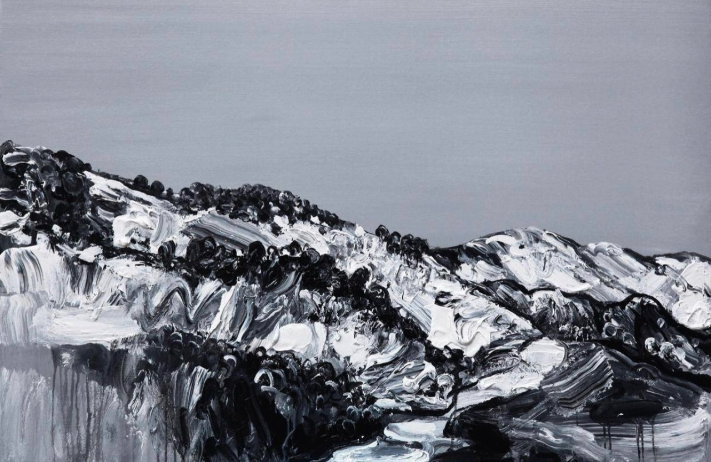
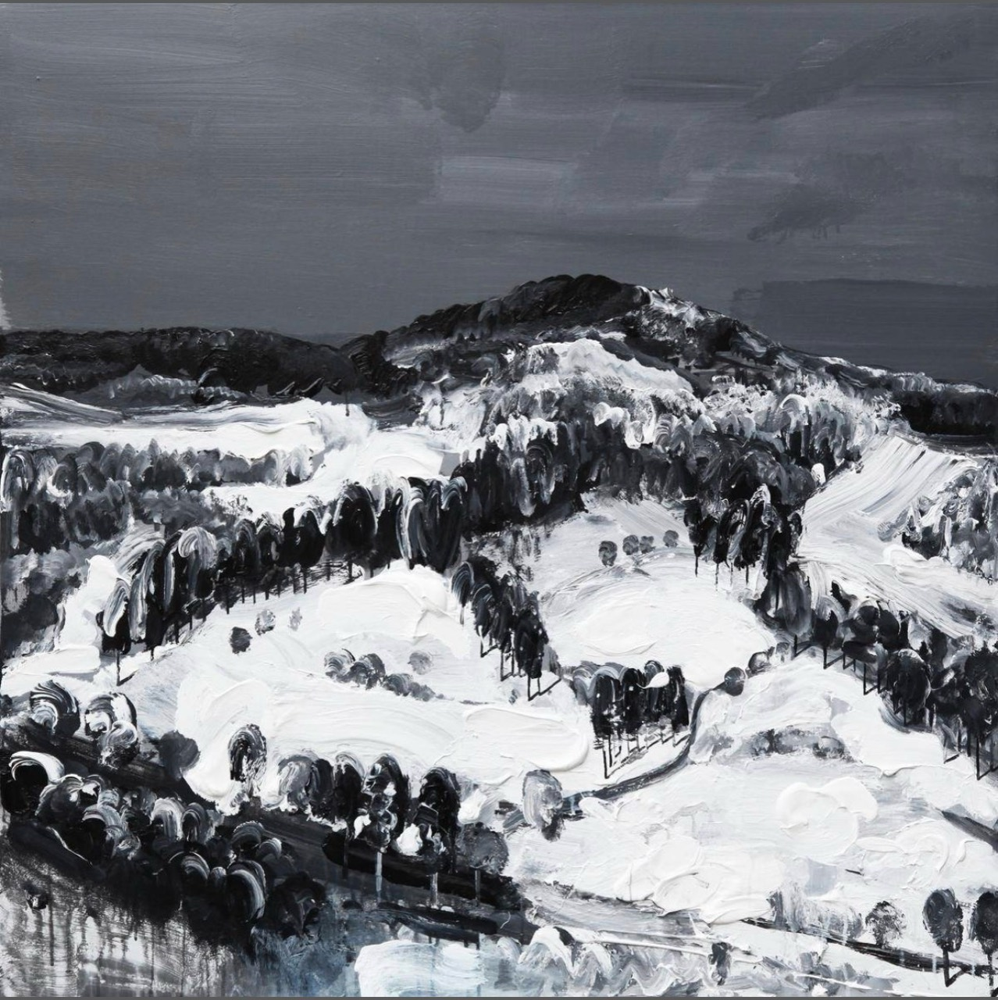
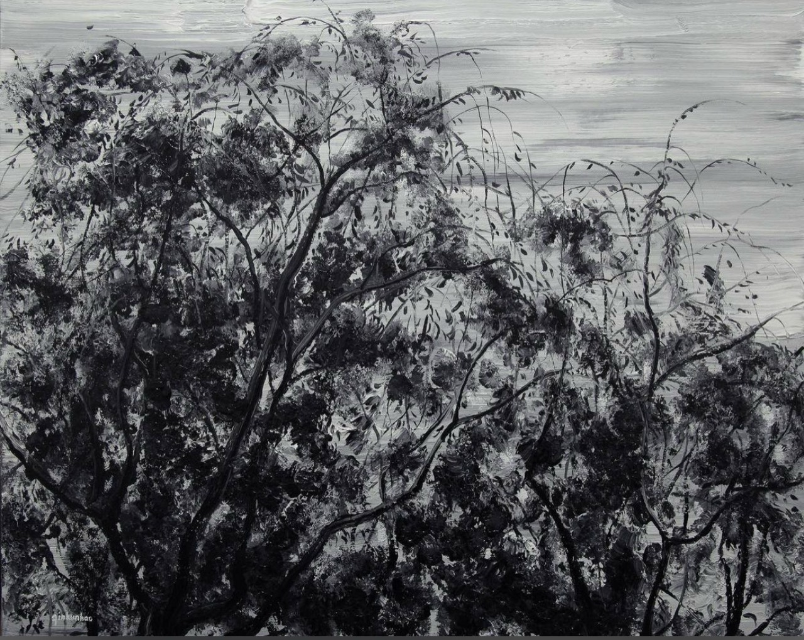
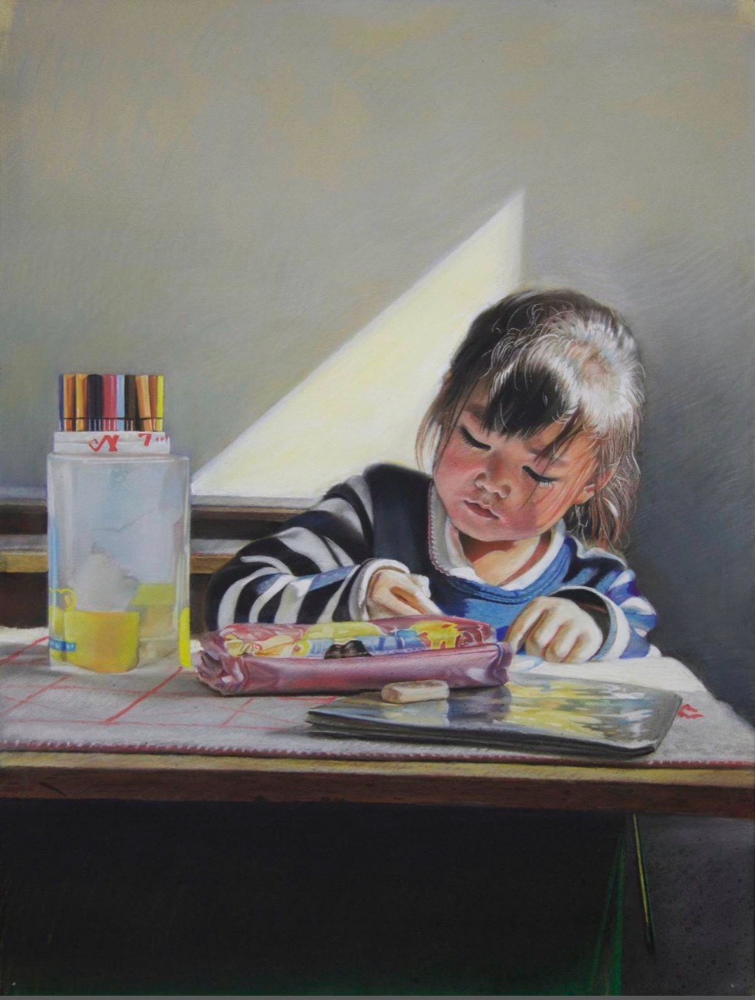
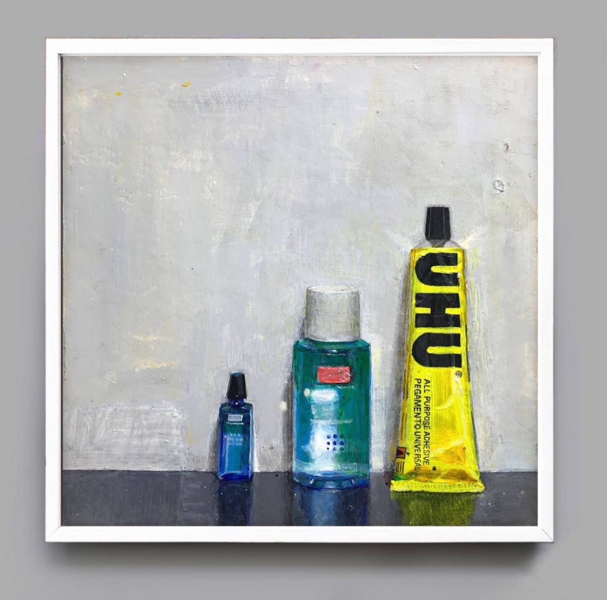
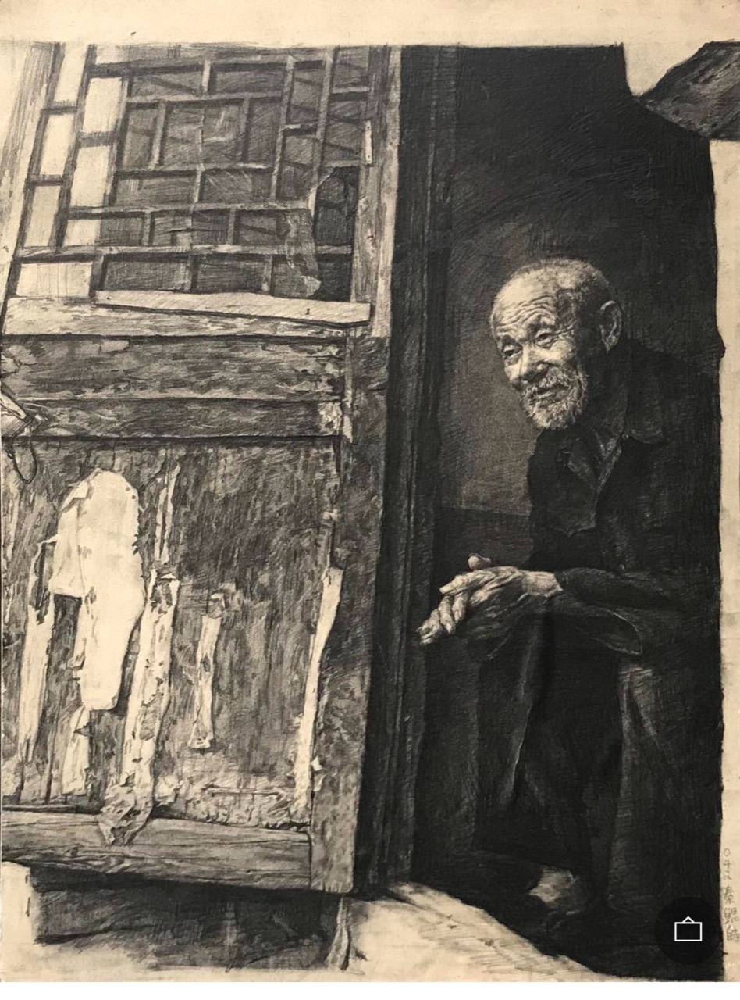

早期素描根基
《等待》呈現人物、物件、時間痕跡與中央美院式黑白灰控制。

A3 Growth Core / A2 Candidate Watch
從中央美院寫實根基出發，逐步轉向黑白灰山川、光與線、點線面結構與表現性精神風景。
Artist
秦鯤皓的價值不在於他能畫寫實，而在於他能否把中央美院的造型訓練，轉化成屬於自己的黑白灰山川與精神性風景。
Collection Threads
《等待》呈現人物、物件、時間痕跡與中央美院式黑白灰控制。
《美術課》補足兒童題材、窗光處理與色粉媒材探索。
《影06號》把樹枝、樹葉轉化為線條、明暗與點線面關係。
《川系列之一》《川系列九》共同形成表現性山川的收藏核心。
《川系列之一》被藝術家用作微信公開身份圖像，強化代表性。
後續重點觀察《川》系列是否形成穩定展覽、出版與市場辨識度。
Selected Works
川系列 / 第一核心
《川》系列頂級代表。藝術家微信平台長期使用此作為公開身份圖像，是目前收藏中的 anchor work。

川系列 / 雙核心
以方形尺幅補足《川》系列中的凝練山川結構，與《川系列之一》形成雙核心。

影系列 / 語言過渡
從樹枝與樹葉的線條、明暗、點線面關係，銜接後來表現性山川語言。

色粉 / 生活寫實
具展覽紀錄的色粉媒材探索作品，呈現光線、兒童題材與生活觀察。

丙烯 / 罩染技法
美院就讀期技法探索作品，以日常物件、顏色層疊與罩染實驗補足早期媒材脈絡。

素描 / 早期根基
早期素描代表，補足人物塑造、黑白灰控制與中央美院系統造型根基。
Rabi 評價
秦鯤皓目前屬 A3 Growth Core，但具備 A2 候選條件。他的關鍵不在於單件寫實能力，而在於能否把中央美院造型訓練轉化為穩定、成熟、可辨識的表現性山川語言。
馬楠是已建立的精神世界；秦鯤皓是正在形成的高潛力成長倉。